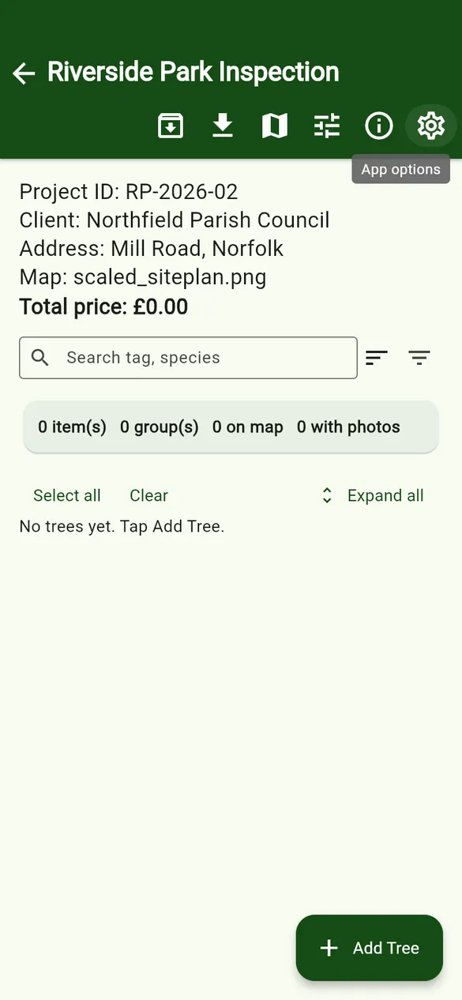
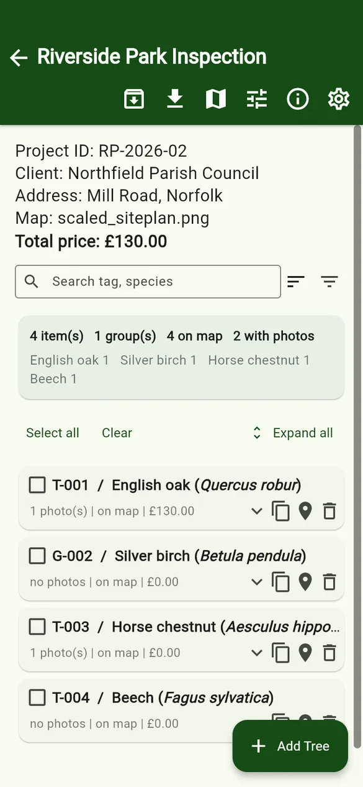
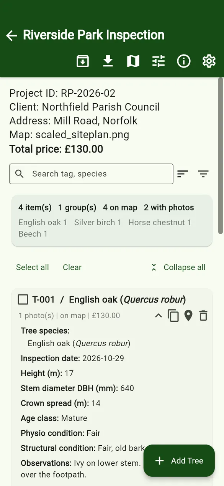
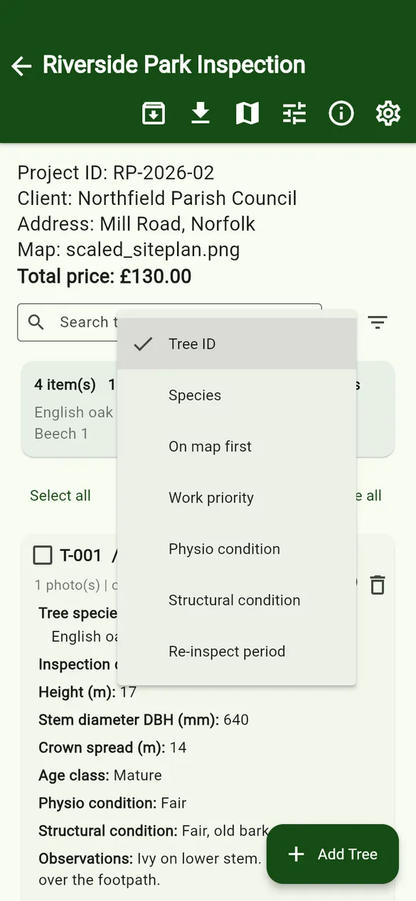
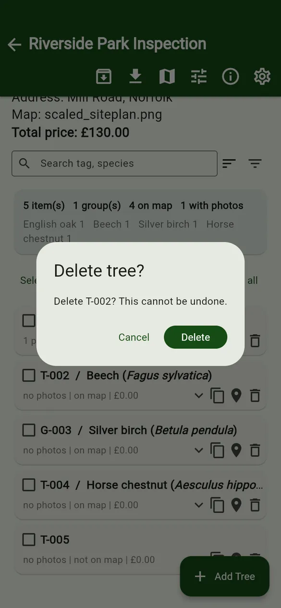
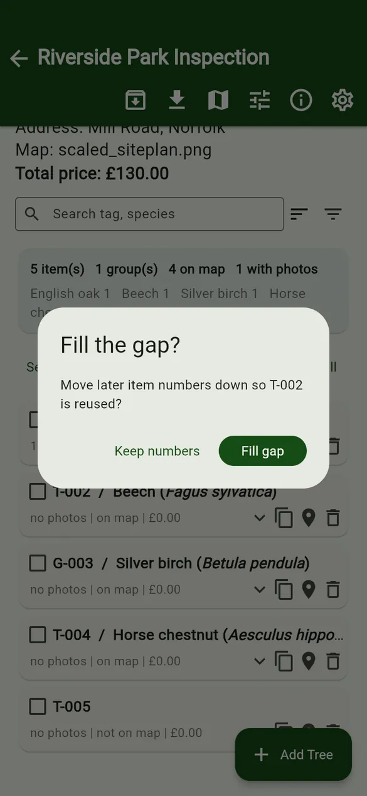
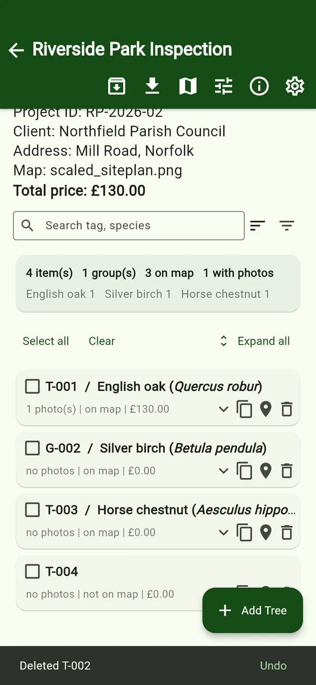

User guides › Tree list
Tree list
Search, sort, filter, expand, duplicate and delete trees, and fill numbering gaps.
Open a project to see its tree list. Every tree, group or other item in the project is one row.



Project header and summary
The top of the list shows the project ID, client, address, attached map and the total price of all quotes. Under the search box, the summary card counts items, groups, trees on the map and trees with photos, and lists how many of each species there are.
Toolbar
| Button | What it does |
|---|---|
| Archive | Moves the project into Archives on this phone (Full or Simple). See Archive. |
| Export | Excel, quote, maps, photos and full export. See Export. |
| Project map | All pinned trees on the site plan. See Map and pins. |
| Project settings | Project details, map, fields, quoting and export settings. See Project settings. |
| Quick guide / App options | Help for this screen and app-wide options. |
Search, sort and filter
- Search finds a tree by tag (ID) or species.
- Sort (the lines icon) orders the list by Tree ID, Species, On map first, or by fields you have marked for filtering, such as Work priority or condition.
- Filters (the funnel icon) narrows the list by type, species, on map, photos and your filter fields. Choose which fields appear here with the filter icon on each field in the data structure.
- Select all and Clear tick or untick the trees shown; Expand all opens every row.

Each tree row
A row shows the ID, the species (scientific name in italics), and a line such as 1 photo(s) | on map | £130.00. Tap the row to open the tree form. The icons on the right are:
- Show details – expand the row to see more values.
- Duplicate – make a copy of the tree (see below).
- Map – open the map to place or move this tree’s pin.
- Delete – delete the tree.
Duplicate a tree
Duplicate copies the tree’s field values, its pin (placed slightly offset so you can drag it), its quote and SOR lines. The copy gets the next free ID number (keeping any manual text) and today’s date, and its form opens so you can change what differs. Photos are not copied.
Delete, Fill gap and Undo
- Tap the bin icon and confirm Delete.
- If deleting leaves a gap in the numbering (for example T-002 is deleted but T-003 exists), the app asks Fill the gap?
- Fill gap moves later numbers down so the number is reused (T-003 becomes T-002, and so on).
- Keep numbers leaves the other IDs unchanged.
- A bar at the bottom says Deleted T-002. Tap Undo straight away to bring the tree back.


